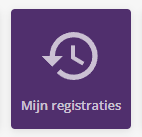
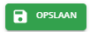

Klik op 'Mijn Registraties'

Zorg dat de datum correct staat
Druk op het potlood icoon van de te wijzigen dag
Maak een nieuwe tikking aan
Geef het uur van start of stop in
Denk ook aan het vervoersmiddel
Klik op opslaan

Je kan ook kiezen voor opslaan en sluiten
Sluit het venster
Uw tikking werd geregistreerd